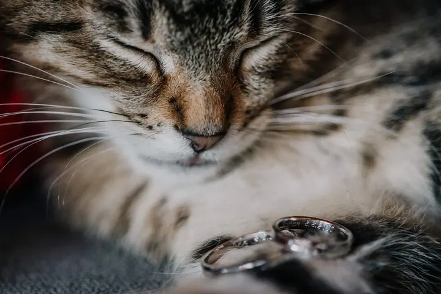
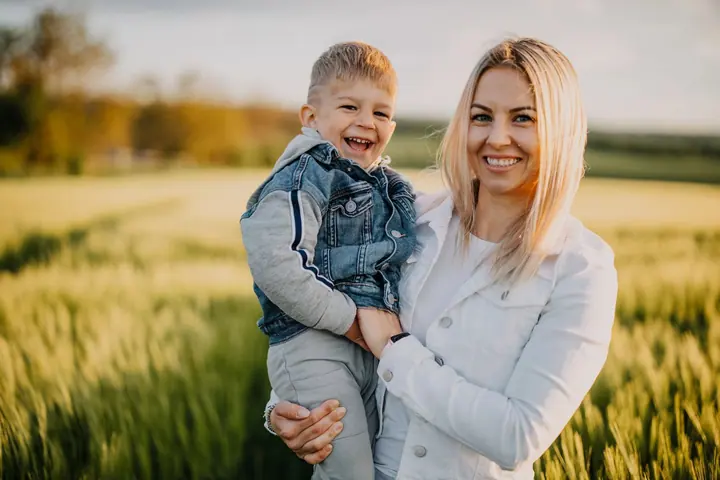

Svatby
Na svatbách mě nejvíc baví emoce, napětí a krása dvou lidí, kteří oslavují lásku. Rád vám nafotím i předsvatební fotky, svatební focení začíná na 6 000 Kč.

Jmenuji se Jan Vosáhlo, ale všichni mi říkají Honza. Jsem svatební a portrétní fotograf ze Šumperka na okraji Jeseníků a za focením rád jezdím po celé republice i do zah…
Rezervovat termínJsem obyčejný kluk ze severní Moravy, který si našel lásku k focení. Jako malý jsem mamce pořád bral foťák a fotil kytičky a drobnosti, které mě zaujaly. Asi v osmi letech jsem dostal od dědečka jeho starý foťák na kinofilm a najednou jsem musel přemýšlet nad každým snímkem. Moje nadšení tím jen rostlo.


Pak přišel první digitální kompakt a s ním street fotografie, která mě fascinuje dodnes. V patnácti jsem byl na workshopu v Praze, kde všichni kolem měli velké zrcadlovky a já jen malý kompakt. O to víc mě potěšilo, když za mnou lektor Björn Steinz přišel a řekl mi, že mám talent. Začal jsem fotit portréty pro kamarády a v osmnácti mi přišla nabídka nafotit svatbu jako druhý fotograf. Od roku 2021 se věnuji převážně svatbám.
Do focení dávám srdce, péči a energii naplno, stejně jako do všeho, co dělám. Rád cestuji, protože mě každá cesta nabije. A když pro vás upravuju fotky, vždycky na mě dohlíží můj chlupatý kočičák.
Co fotím
Na svatbách mě nejvíc baví emoce, napětí a krása dvou lidí, kteří oslavují lásku. Rád vám nafotím i předsvatební fotky, svatební focení začíná na 6 000 Kč.
Fotím v přírodě na vašem oblíbeném místě, třeba tam, kde jste měli první rande, u vás doma nebo v ateliéru. Ať jsme kdekoli, vždycky z focení dostaneme maximum.
Vyrazíme ven do polí, k vodě nebo tam, kde je vám dobře. Děti si hrají, vy se mazlíte a já fotím, jak to mezi vámi opravdu je.
Kromě svateb a portrétů fotím i akce. Vždycky mě bavila reportážní fotografie, a tak zachytím atmosféru tak, jak ji zažíváte.
Fotografie jsou ilustrační
Postup
Ve formuláři mi pošlete datum, místo a co budeme fotit. Poptávka je nezávazná a ozvu se vám co nejdřív.
Probereme, jak si focení představujete. Když si s něčím nebudete jistí, rád poradím, třeba i s výběrem místa.
Přijedu za vámi, ať jste kdekoli. Užijeme si to v klidu a já se postarám o to, abyste se před foťákem cítili přirozeně.
Fotky pečlivě vyberu a upravím, pod dohledem mého kocoura. Pak je dostanete v online galerii.
Otázky
Ano. Pocházím ze Šumperka, ale za focením rád jezdím do všech koutů republiky i do zahraničí.
Svatební focení začíná na 6 000 Kč. Přesnou cenu vám rád spočítám podle toho, jak dlouho a co všechno budeme fotit.
Kdekoli, kde se cítíte dobře. Na vašem oblíbeném místě v přírodě, u vás doma nebo v ateliéru.
Ano, předsvatební focení je skvělá příležitost se poznat a zvyknout si na foťák ještě před velkým dnem.